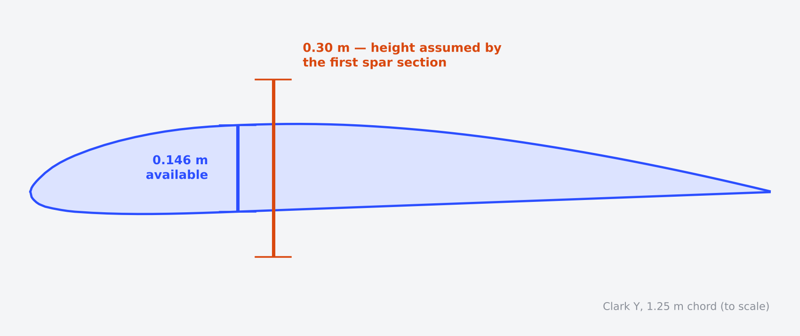
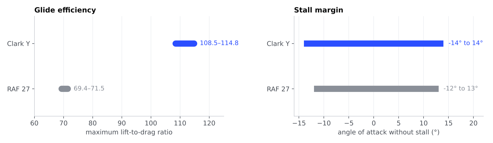
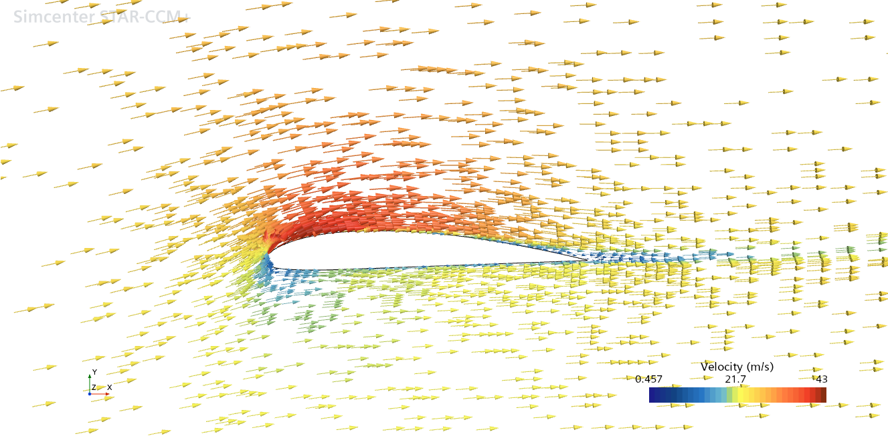
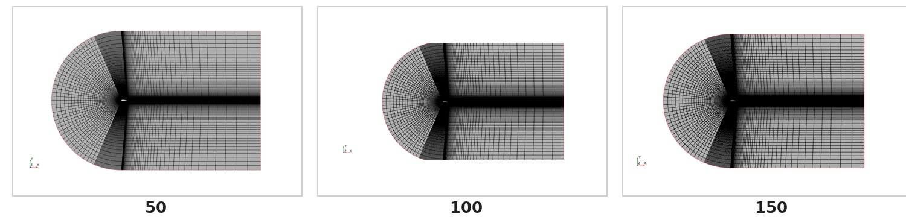
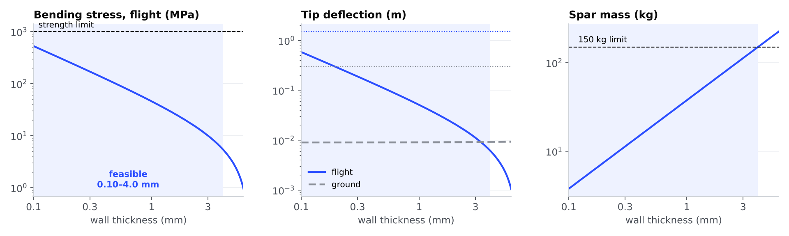
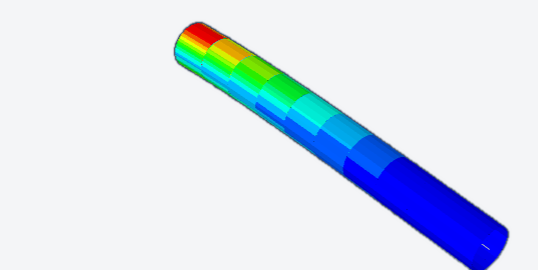
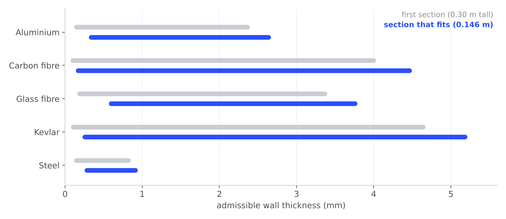

With Étienne Roy: choose an airfoil, check it in CFD, size the spar that carries the load — then put the two halves side by side and see whether the spar fits inside the wing.

For a glider, the figure that matters is how far it travels per metre lost: the lift-to-drag ratio. From the reference polars, Clark Y reaches a maximum of about 109–115 against 69–72 for RAF 27, and stays unstalled over a wider range of angles. Its flat underside is also easier to build. In level flight, the wing needs CL ≈ 0.44.

We simulated the Clark Y in 2D in STAR-CCM+, on a C-shaped domain with 50, 100 and 150 cells around the profile, and with three descriptions of the flow. At 7°:
| Flow model | 50 | 100 | 150 cells | Reading |
|---|---|---|---|---|
| Inviscid (Euler) | 1.25 | 1.25 | 1.25 | No viscous losses: lift overestimated |
| Laminar | — | — | — | No meaningful lift at this Reynolds number |
| Turbulent, realizable k–ε | 1.09 | 1.09 | 1.09 | Retained: stable across meshes |


The spar is a 10 m cantilever with a hollow elliptical section, loaded by its own weight on the ground and by the lift in flight. Beam theory gives stress, tip deflection and mass as functions of the wall thickness e. I wrote the sizing model in Python and swept e over five orders of magnitude for five materials.

We rebuilt the spar as a beam model in Abaqus. The two models do not agree yet on stress and deflection, and the gap does not scale with the load — which points to how the section or the output was defined, not to the physics. Making both models use strictly the same definitions is the open step; I treat Abaqus here as a check to be reconciled, not as a confirmation.

Taken separately, each half looked fine. Taken together, the first spar section was 0.30 m tall while the Clark Y offers 0.146 m at its thickest point. A decision made in the aerodynamics phase imposed a geometric limit on the structure.
I re-ran our sizing script with a section that fits. Halving the height divides the second moment of area by about 4.5, so every material needs a thicker wall — but all five remain feasible. The constraint reshapes the design window; it does not close it.

Each model was reasonable on its own. The useful result came from making them talk to each other — and from not hiding where they still disagree.
2D steady CFD, uniform load, equivalent isotropic composites; no torsion, gusts or local buckling.
Reconcile the Abaqus and analytical definitions, then add a finite 3D wing and a spanwise lift distribution.